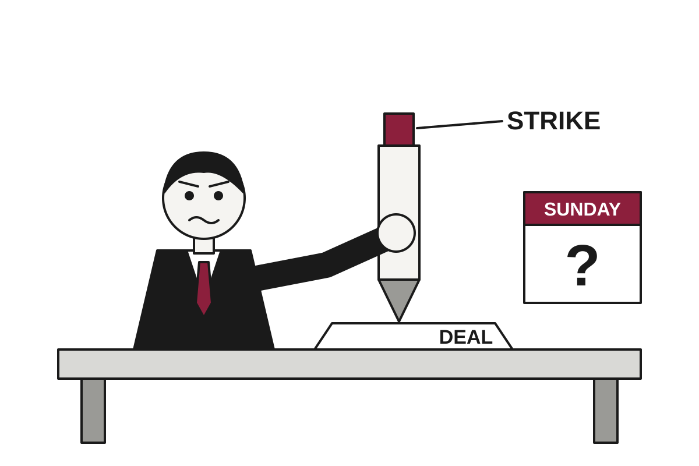

Trump Weighs Attack on Iran Sunday, or Possibly a Deal, Pending Whichever Comes First
With an interim agreement unraveling and elections looming in both the US and Israel, President Trump says he may strike Iran as soon as Sunday or reach a major deal.
The wire said: Iran war live: Trump hints at possible Sunday Iran attack or deal reached · Al Jazeera

Catch up
The US-Israeli war against Iran began on February 28, and an interim deal meant to end it has since fallen apart, according to Al Jazeera. Each side now blames the other for the collapse.Why it matters
A resumed war could disrupt the Gulf region and the energy markets tied to it, and the timing overlaps with two elections. Ordinary people everywhere have a stake in whether the next move is a strike or a signature.US President Donald Trump said the United States is considering a possible attack on Iran as soon as Sunday, or alternatively a major deal with Tehran, according to Al Jazeera. He said Washington might have to "finish the job". The range of outcomes on offer, from bombing to a treaty, is wide, and the choice between them appears to be scheduled for the weekend.
Al Jazeera reported that Trump said on Friday he "may do another little Epic Fury". Epic Fury is the codename of the US-Israeli war on Iran. Translation: a campaign that began with the assassination of Iran's supreme leader is being described with the word "little", which is a generous use of the adjective.
Iranian President Masoud Pezeshkian blamed the US for the breakdown of the interim agreement, calling the Americans "cowards" who "messed everything up". He also said both sides should return to the deal and "conclude it". Translation: he is insulting the other party and asking it to sign, which is a recognizable negotiating style.
Tehran's military posture is less ambiguous. The Revolutionary Guard warned that even limited strikes would draw a response "several times greater", per Fars News Agency. Armed Forces Chief of Staff Ali Abdollahi said US forces would not be allowed into the Gulf "under any circumstances and at any time". Government spokesperson Fatemeh Mohajerani said Iran does not flee dialogue but will not "wait for permission to defend itself".
NPR reported that military reinforcements are moving to the Middle East while some personnel have left the region, which it said points to a potential attack. Translation: the people who need to be somewhere else are going there, and the people who might be hit are leaving. Such logistics are usually more informative than speeches.
Then there is the calendar. Al Jazeera noted that Israelis choose a new government on Tuesday, and that Prime Minister Benjamin Netanyahu says he remains committed to overthrowing Iran's government. Trump's Republican Party faces midterms on November 3, with Democrats potentially winning both chambers of Congress. NPR said millions of Americans have already voted. Neither source says the election dates drive the decisions, but both leaders have an interest in how the next few days look.
On the Iranian side, Al Jazeera reported that the judiciary chief met Supreme Leader Mojtaba Khamenei to discuss corruption and compensation for Iranians affected by the war. Khamenei replaced his father, who was killed on February 28, and has not been seen in public since early March. Chief negotiator Mohammad Bagher Ghalibaf also reportedly met him this week.
So the state of play is this: one side is offering a strike or a deal, the other is offering a deal or a response several times greater, and both are blaming each other for the previous deal. Sunday will clarify which option was the real one.
Satire based on reporting by Al Jazeera, NPR World. Read the originals for the straight version.